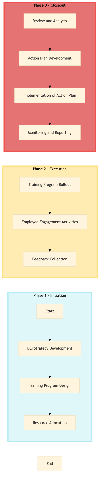

| Role | Steps |
|---|---|
| Human Resources Manager | 1.1 3.1 3.2 3.3 |
| Learning & Development Specialist | 1.2 2.1 3.2 |
| Budget Manager | 1.3 |
| HR Coordinator | 2.2 2.3 3.4 |
| Step | Name | Role | System | Input | Output | KPI | Dec? | Exc? | Pain Point / Risk |
|---|---|---|---|---|---|---|---|---|---|
| 1.1 | DEI Strategy Development | Human Resources Manager | Oracle OPERA Cloud | Company-wide DEI goals and objectives | DEI strategy document | Less than 4 weeks to develop strategy | N | Y | Aligning with Marriott's global DEI framework |
| 1.2 | Training Program Design | Learning & Development Specialist | Workday HCM | DEI strategy document | Training program outline and materials | Less than 3 weeks to design programs | N | Y | Customizing training for different employee roles |
| 1.3 | Resource Allocation | Budget Manager | SAP S/4HANA | Training program outline and materials | Allocated budget for DEI initiatives | Less than 2 weeks to allocate budget | N | Y | Balancing DEI spending with other HR priorities |
| 2.1 | Training Program Rollout | Learning & Development Specialist | Book4Time | Training program outline and materials, allocated budget | Scheduled training sessions | Less than 2 weeks to schedule all sessions | N | Y | Coordinating with different departments for session availability |
| 2.2 | Employee Engagement Activities | HR Coordinator | Oracle OPERA Cloud, Knowcross HotSOS | Scheduled training sessions | Engagement activities calendar and reports | Less than 1 week to plan activities | N | Y | Ensuring high participation rates in engagement activities |
| 2.3 | Feedback Collection | HR Coordinator | Microsoft Power BI, Salesforce | Engagement activities calendar and reports | Employee feedback on DEI initiatives | Less than 1 week to collect feedback | N | Y | Analyzing qualitative feedback for continuous improvement |
| 3.1 | Review and Analysis | Human Resources Manager | Microsoft Power BI, Salesforce | Employee feedback on DEI initiatives | DEI initiative review report | Less than 2 weeks to complete analysis | N | Y | Identifying areas for improvement based on feedback |
| 3.2 | Action Plan Development | Human Resources Manager, Learning & Development Specialist | Oracle OPERA Cloud, Workday HCM | DEI initiative review report | Action plan for DEI improvements | Less than 2 weeks to develop action plan | N | Y | Aligning action plan with Marriott's global DEI strategy |
| 3.3 | Implementation of Action Plan | Human Resources Manager, Learning & Development Specialist | Oracle OPERA Cloud, Workday HCM | Action plan for DEI improvements | Implemented action plan with timelines and responsibilities | Less than 1 week to implement action plan | N | Y | Ensuring all action items are addressed promptly |
| 3.4 | Monitoring and Reporting | HR Coordinator | Microsoft Power BI, Salesforce | Implemented action plan with timelines and responsibilities | Regular DEI progress reports | Monthly reporting on DEI metrics | N | Y | Maintaining consistent data collection and reporting |
A structured process document for implementing Diversity, Equity & Inclusion (DEI) initiatives at a Marriott full-service hotel using Oracle OPERA Cloud PMS and other Marriott systems.